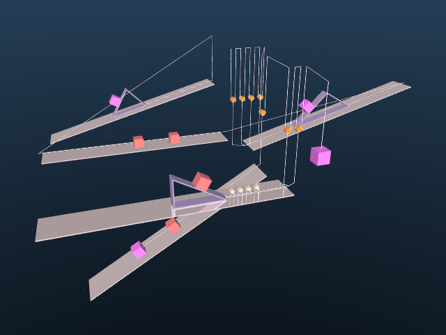
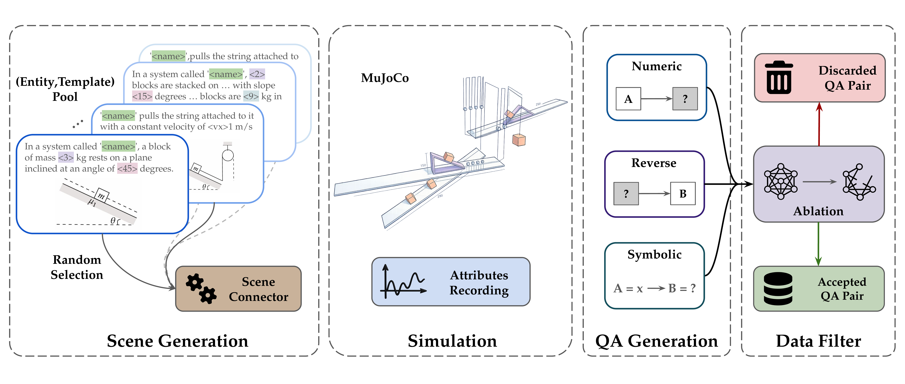
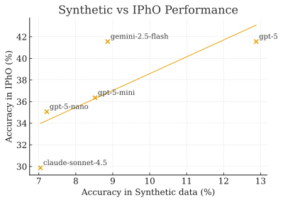

DSL Input (YAML)
Loading code...Mihir Prabhudesai*^ Aryan Satpathy*^ Yangmin Li* Zheyang Qin* Nikash Bhardwaj Amir Zadehλ Chuan Liλ Katerina Fragkiadaki Deepak Pathak
Carnegie Mellon University · λ Lambda
^ Project co-leads · * Core contributors

Figure 1: Scene graph YAML and generated simulation scene.
We present a method for turning physics simulators into scalable generators of question–answer pairs, removing the need for manual annotation. The core idea is to structure the randomization with a domain-specific language (DSL) and use it to procedurally generate reasoning problems with known answers, as illustrated in the mechanics example above.
The approach is not limited to mechanics: any domain with a reliable simulator—such as fluid dynamics or robotics—can use the same recipe to produce data at low cost.
Unlike static, hand-curated datasets, this recipe scales with model capability. Stronger models can design better DSL, which in turn generate more diverse and challenging data for learning. Because correctness is enforced by the simulator rather than human annotators, the required supervision is weak and inexpensive.
We have witnessed remarkable advances in LLM reasoning capabilities with the advent of DeepSeek-R1. However, much of this progress has been fueled by the abundance of internet question–answer (QA) pairs—a major bottleneck going forward, since such data is limited in scale and concentrated mainly in domains like mathematics. In contrast, other sciences such as physics lack sufficient large-scale QA datasets to effectively train reasoning-capable models. In this work, we show that physics simulators can serve as a powerful alternative source of supervision for training LLMs for physical reasoning. We generate random scenes in physics engines, create synthetic question–answer pairs from simulated interactions using pre-written templates, and train LLMs using reinforcement learning on this synthetic data. Our models exhibit zero-shot sim-to-real transfer to real-world physics benchmarks: for example, training solely on synthetic simulated data improves performance on IPhO (International Physics Olympiad) problems by upto 7 percentage points across different model sizes. These results demonstrate that physics simulators can act as scalable data generators, enabling LLMs to acquire deep physical reasoning skills beyond the limitations of internet-scale QA data.
We design a domain-specific language (DSL) to structure the randomization of scene graphs, enabling controlled variation along physically meaningful axes while guaranteeing validity and diversity. Randomization is explicitly restricted to parameters that affect system dynamics; for example, the absolute length of a pulley string is irrelevant to the physics and is therefore excluded. Domain knowledge is used only to prune such non-contributing degrees of freedom, avoiding unnecessary variability without constraining the underlying physics. This constitutes a weak, low-cost form of supervision that scales naturally and can be automated using LLMs.

Loading code...Figure 2: Scene description in DSL (left) and generated MuJoCo scene (right).
Since our scenes are structured, we can write simple natural language descriptions for each atomic element. By combining these descriptions according to the scene graph structure, we can automatically generate diverse question–answer pairs without human annotation. A question is then formed by randomly selecting one of the relevant physical quantities of one of bodies in the scene, and the answer is computed by running the simulation.
Figure 3: Recorded Data (left), MuJoCo simulation (center), and corresponding QA pair (right).
We support three question types—numeric, reverse, and symbolic—each requiring a distinct solution strategy:
Across the Qwen2.5 model family, improvements on synthetic tasks consistently translate into gains on IPhO Mechanics, and this relationship holds across model scale. Models that benefit more from synthetic-data RL on numeric, reverse, and symbolic tasks also show larger improvements on real-world physics problems, indicating meaningful transfer without explicit sim-to-real transfer. Beyond IPhO, the same synthetic RL procedure improves performance on a range of established physics and mathematics benchmarks, demonstrating that the gains generalize across domains and evaluation settings.
| Model | Synthetic Numeric |
Synthetic Symbolic |
HCV | IPhO Mechanics |
|---|---|---|---|---|
| Qwen3-30B | 14.8% → 17.4% (+2.6) | 8.8% → 8.0% (-0.8) | 53.9% → 59.0% (+5.1) | 35.6% → 40.0% (+4.4) |
| Qwen2.5-72B | 8.5% → 18.1% (+9.6) | 4.8% → 10.4% (+5.6) | 56.1% → 52.2% (-3.9) | 20.3% → 25.6% (+5.3) |
| Qwen2.5-32B | 8.9% → 21.9% (+13.0) | 5.6% → 10.4% (+4.8) | 50.6% → 53.9% (+3.3) | 19.8% → 25.2% (+5.4) |
| Qwen2.5-14B | 7.0% → 17.0% (+10.0) | 5.6% → 10.4% (+4.8) | 49.3% → 51.7% (+2.4) | 16.07% → 20.45% (+4.4) |
| Qwen2.5-7B | 5.2% → 17.1% (+11.9) | 6.4% → 10.4% (+4.0) | 45.0% → 42.6% (-2.4) | 10.7% → 12.0% (+1.3) |
| Qwen2.5-3B | 4.8% → 12.5% (+7.7) | 3.2% → 9.4% (+6.2) | 31.9% → 39.5% (+7.6) | 5.68 → 13.15% (+7.5) |
Table 1: Qwen2.5 Instruct performance before and after RL on synthetic data and
IPhO.
Format: baseline → RL (Δ)
| Benchmark | Score |
|---|---|
| JEEBench | 34.38% → 52.28% (+17.90) |
| PHYSICS | 39.42% → 43.09% (+3.67) |
| OlympiadBench | 41.41% → 44.53% (+3.12) |
| AIME 25 (mean@8) | 10.83% → 12.50% (+1.67) |
| MATH 500 | 78.4% → 82.8% (+4.4) |
Table 2: Qwen2.5-32B Instruct on real-world benchmarks.
baseline → RL (Δ)
Our simulator-generated synthetic data provides a fast, low-cost proxy for evaluating scientific reasoning. Unlike real-world physics experiments, which are expensive and slow to construct, simulator-based benchmarks are cheap, scalable, and easily reproducible. As shown in the figure, model performance on our synthetic tasks strongly correlates with performance on real-world physics problems (such as IPhO), indicating that synthetic evaluation can reliably predict real-world reasoning ability.

After RL fine-tuning on synthetic data, the model shows a clear shift in how it uses physics equations. Arithmetic mistakes largely vanish, but more importantly, equations are selected based on the physical setup rather than applied verbatim.
Additionally, these gains are not constrained to the scope of the simulator used to generate the training data. The fine-tuned model also improves on problems that are not simulatable in MuJoCo, indicating that this recipe can drive learning that generalizes beyond the domain knowledge in the simulator.